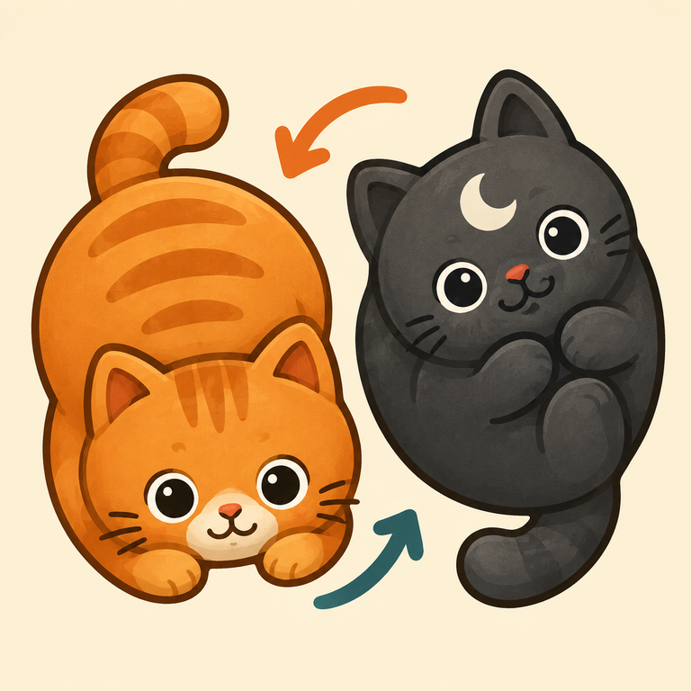

Think in opposites
Preview each landing, undo freely, and ask for a hint when a board gets tangled.
預覽落點、自由復原，卡關時也可使用提示。
ONE SWIPE · TWO DIRECTIONS
Guide one cat with your swipe while the other moves the opposite way. Find the route that lands each sleepy cat in the right bed.
一隻跟著滑動，另一隻往相反方向。想好路線，讓兩隻貓咪回到各自的睡床。
Coming to iPhone · 即將登陸 iPhone

Preview each landing, undo freely, and ask for a hint when a board gets tangled.
預覽落點、自由復原，卡關時也可使用提示。
No lives and no timers. Sound, haptics, and reduced motion are adjustable.
沒有生命限制及計時，按自己的步調遊玩。
Earn medals and unlock playful appearances as you solve.
取得獎牌，逐步解鎖貓咪新造型。